Ingo Steinke
Creative Web Developer
Begeistern Sie Ihre Kunden im Internet
Schön und schnell präsentiere ich Sie und Ihr Angebot.
Ich bin Ingo Steinke, begeisterter kreativer Webentwickler aus Düsseldorf mit über 20 Jahren Berufserfahrung. Von meiner Arbeit profitierten unter anderem die Frankfurter Allgemeine Zeitung, die ZEIT, HDI, Avenga und wao.io.
Mit mir können Sie arbeiten
Sie möchten Ihre Website überarbeiten? Ihr Team braucht Verstärkung durch einen Front-End-Entwickler mit Full-Stack-Erfahrung? Rufen Sie mich an oder hinterlassen Sie mir eine Nachricht!
Gern können wir uns bei einem Kaffee unverbindlich über ihr Projekt unterhalten.
Projekte
Überzeugen Sie sich selbst von meiner Arbeit! Eine Auswahl meiner bisherigen Projekte:
Portfolio Relaunch
 Ingo-Steinke.de zeigt meine Arbeit als Web-Entwickler. Minimalistisches Design, moderne Farben, aktuelle Technologie und umfangreiche textliche Überarbeitung prägen den Relaunch meines beruflichen Portfolios. github.com/openmindculture/ingo-steinke.de ingo-steinke.de
Ingo-Steinke.de zeigt meine Arbeit als Web-Entwickler. Minimalistisches Design, moderne Farben, aktuelle Technologie und umfangreiche textliche Überarbeitung prägen den Relaunch meines beruflichen Portfolios. github.com/openmindculture/ingo-steinke.de ingo-steinke.de
HTML 5 CSS 3 JavaScript Liquid Eleventy
Meetup-Organisation
 Anfang 2020 übernahm ich die fachliche Leitung des Kölner Web-Performance-Meetups. Diverse internationale Vorträge, unter anderem von Patrick Meenan, Andrew Petryk, Anna Backs und Christina Zenzes begeisterten das Publikum über die Grenzen der Region hinaus. www.meetup.com/cologne-germany-high-performance-website-optimization-group
Anfang 2020 übernahm ich die fachliche Leitung des Kölner Web-Performance-Meetups. Diverse internationale Vorträge, unter anderem von Patrick Meenan, Andrew Petryk, Anna Backs und Christina Zenzes begeisterten das Publikum über die Grenzen der Region hinaus. www.meetup.com/cologne-germany-high-performance-website-optimization-group
Event-Management Web-Performance
WordPress-Plugin
 Als Arbeitserleichterung für die Reakteure unserer Kunden bereinigt ein WordPress-Plugin vollautomatisch den Cache-Speicher des Servers, auf dem wao.io die Ladezeit der WordPress-Seite optimiert. Das Plugin wurde 2020 auf WordPress.org veröffentlicht. de.wordpress.org/plugins/wao-io-cache-control
Als Arbeitserleichterung für die Reakteure unserer Kunden bereinigt ein WordPress-Plugin vollautomatisch den Cache-Speicher des Servers, auf dem wao.io die Ladezeit der WordPress-Seite optimiert. Das Plugin wurde 2020 auf WordPress.org veröffentlicht. de.wordpress.org/plugins/wao-io-cache-control
PHP JavaScript Docker Localization
Shopware-Plugin
 Shopbetreibern wird durch eine API-Schnittstelle die Ladezeit-Optimierung erleichtert. Dieses Back-End-Plugin war mein erstes Projekt mit Shopware 6 und wurde 2020 im offiziellen Shopware-Store veröffentlicht. store.shopware.com/waoio62482995391f/wao.io-cache-control.html
Shopbetreibern wird durch eine API-Schnittstelle die Ladezeit-Optimierung erleichtert. Dieses Back-End-Plugin war mein erstes Projekt mit Shopware 6 und wurde 2020 im offiziellen Shopware-Store veröffentlicht. store.shopware.com/waoio62482995391f/wao.io-cache-control.html
Shopware 6 Symfony PHP Vue.js
React-Web-App
Die grafischen Oberfläche von wao.io visualisiert technische Daten und lässt Webmaster die Optimierung ihrer Website selbst einstellen. Ich entwickelte und aktualisierte Komponenten der Web-App als Teil des Front-End- und Support-Teams. wao.io/de/about-us/experts/ingo-steinke
React JSX ES6 CSS-in-JS Storybook
Performance-Vortrag
 Wie beschleunige ich meine Website? Angelina Farsch und ich erläuterten beim Kölner Web-Performance-Meetup, wie Betreiber von Webseiten herausfinden, ob ihre Seite zu den Sprintern oder Schnecken gehört und mit Welchen Mitteln wir die Performance erhöhen können. meetup.com/cologne-germany-high-performance-website-optimization-group/events/268706480/
Meetup Vortrag Jitsi
Web-Visitenkarte
 Kleiderordnung-Düsseldorf erstellte ich 2016 als One-Pager mit Reiternavigation. Grafische Grundlage war das vorliegende Design der gedruckten Flyer und Visitenkarten, das ich in Absprache mit der Designerin für die Website adaptierte. github.com/openmindculture/kleiderordnung www.kleiderordnung-duesseldorf.de
Kleiderordnung-Düsseldorf erstellte ich 2016 als One-Pager mit Reiternavigation. Grafische Grundlage war das vorliegende Design der gedruckten Flyer und Visitenkarten, das ich in Absprache mit der Designerin für die Website adaptierte. github.com/openmindculture/kleiderordnung www.kleiderordnung-duesseldorf.de
HTML 5 CSS 3 JavaScript PHP
Maker-Projekt
 Die interaktive Upcycling-Installation "Green Wall-E" entstand aus Arduino-Hardware, Holz und Abfall. Auf Trockenheit und Gießwasser reagierte sie mit bunter Lichtanimation und wurde 2019 Sieger beim Sevenval-Hackathon. github.com/openmindculture/arduino www.sevenval.com/blog/culture/woodhack-2019-projekt-green-wall-e/
Die interaktive Upcycling-Installation "Green Wall-E" entstand aus Arduino-Hardware, Holz und Abfall. Auf Trockenheit und Gießwasser reagierte sie mit bunter Lichtanimation und wurde 2019 Sieger beim Sevenval-Hackathon. github.com/openmindculture/arduino www.sevenval.com/blog/culture/woodhack-2019-projekt-green-wall-e/
Arduino C++ Hackathon
Langlebige Lösungen
Ihre Layouts realisiere ich plattformübergreifend, auf Wunsch auch pixelgenau. Mein Ziel sind langlebige Lösungen, elegant, verständlich und pflegeleicht. Modulare Komponenten, Themes und CSS-Frameworks erleichtern die Zusammenarbeit und Weiterentwicklung. Kontinuiertliches Testen ermöglicht es mir, Fehler frühzeitig zu entdecken und zu beheben.
Full-Stack-Erfahrung
Bei der Weiterentwicklung bestehenden Codes kommt mir meine Berufserfahrung und meine pragmatische Einstellung zugute. Mit meinen Erfahrungen im Back-End- und DevOps-Bereich und meiner hohen Lernbereitschaft übernehme ich bei Bedarf auch Aufgaben, die sich rund um die Front-End-Entwicklung ergeben.
Plugin-Programmierung
Schnittstellen zum Back-End implementiere ich vorzugsweise als unabhängige Module. Für den Web-Performance-Servive wao.io entwickelte ich jeweils ein Plugin für Shopware 6 und für das CMS WordPress. Beide Plugins wurden nach erfolgreicher Prüfung in die offiziellen Verzeichnisse aufgenommen.
Fachkenntnisse
Web-Entwicklung
- HTML
- CSS
- JavaScript
- PHP
- XML
- Datenbanken
Frameworks, Libraries
- ReactJS
- Vue.js
- node.js
- Symfony
- Eleventy
- jQuery
Sonstige Tools
- Qualitätssicherung
- Codeverwaltung
- Linter, Transpiler
- DevOps
- Bildbearbeitung
- Webdesign, DevUX, Kollaboration
Beruf und Leidenschaft
Was mich immer noch fasziniert
World Wide Web, das weltweite Netzwerk, ermöglichet einen offenen und kreativen Austausch mithilfe robuster und dezentraler Technologie. Schöne, schnelle und zugängliche Websites sollen allen Menschen Zugang zu diesem Netzwerk bieten. Mit meiner Arbeit kann ich dazu beitragen, diesen Traum zu verwirklichen.
Werdegang
Erste Erfahrungen mit Programmierung und Computergrafik machte ich als Schüler am heimischen Computer. Der Speicherplatz war knapp. Software tippte ich zunächst aus gedruckten Büchern ab. Schnell begann ich, selbst zu programmieren.
Nach meinem Zivildienst studierte ich Psychologie und Kommunikationswissenschaften an der Uni Münster. Nebenbei lernte ich das Internet und die Programmiersprache HTML kennen. Musiker und Veranstalter erkannten mein Talent. Aus dem Hobby wurde ein Job und schließlich mein Beruf.
Mit Flash, CSS und schnellerer Datenübertragen gewann das Internet eine Dynamik, die die Gründung eines Startups nahelegte. Mit meinem Geschäftspartner entwickelte ich zunächst interaktive Websites und Browserspiele in Flash. Suchmaschinenoptimierung und unsere selbst entwickelte CMS- und Shop-Software prägten später unser Geschäft. 2010 verließ ich das eigene Unternehmen und zog der Familie wegen nach Düsseldorf.
Online-Shops und Web-Apps optimierte und erweiterte ich nun als angestellter Web- und Softwareentwickler. Responsives Layout und beschleunigte Ladezeiten sollten bestehende Kundensysteme auch von Unterwegs aus nutzbar machen. Unseren Erfolg konnte ich als Berufspendler täglich selbst verifizieren.
Zukunftsthemen
"Open Mind Culture" ist nicht nur der Titel meines privaten Weblogs. Ich bin offen für Inpspiration und neue Ideen, sofern sie einer kritischen Prüfung standhalten.
Innovation bedeutet in meiner Branche oft nur technischer Fortschritt. Gesellschaftliche Herausforderungen ignoriert unsere Branche seit Jahren erfolgreich, von wenigen Ausnahmen abgesehen. Ökologie, Inklusion, Gleichstellung, Datenschutz und Sicherheit fehlt oft die nötige Priorität.
Digitalisierung und die ökologische Verkehrs- und Energiewende, Green IT, Wind- und Solarenergie, umweltfreundliche Mode und Arbeit aus dem Homeoffice sind Zukunftsthemen neuer Startups und Geschäftszweige. Solche ethischen und ökologischen Unternehmen möchte ich mit meiner Arbeit bevorzugt unterstützen.
Weiterbildung
Durch Recherche und praktische Anwendung gewinne ich täglich neue Erkenntnisse.
Zur Vertiefung lese ich Fachliteratur und besuche Kurse und Veranstaltungen.
Vorträge und Veranstaltungen
Auf Fachveranstaltungen teile ich mein Wissen mit anderen.
Meetups, Konferenzen, Foren und Fortbildungen nutze ich regelmäßig und gern.
In den letzten Jahren hielt ich unter anderem diese Vorträge:
- Meetups in Zeiten von Corona , Juni 2020
- Performance-Optimierung ohne Code-Änderung mit Angelina Farsch, April 2020
- HSTS: Mehr Sicherheit ohne Performanceverlust , Dezember 2018
- Infrastruktur für bessere Web Performance , Mai 2017
- Berufsorientierung: Mein Job! Dein Job? , Januar 2017
Impressum
Ingo Steinke
Neunzigstraße 6a
40625 Düsseldorf
Deutschland
+49 (0) 163 46 84 08 0
kontakt@ingo-steinke.de
www.ingo-steinke.de